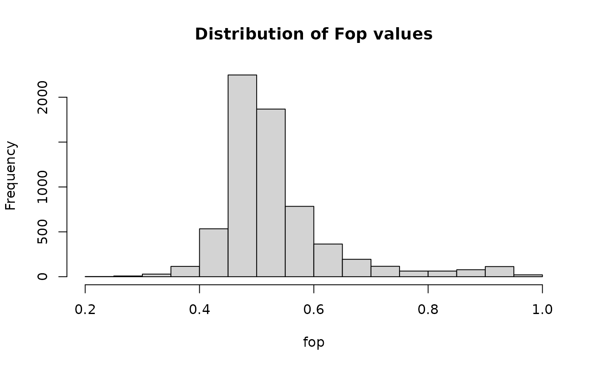

get_fop calculates the fraction of optimal codons (Fop) of each CDS.
Usage
get_fop(cf, op = NULL, codon_table = get_codon_table(), ...)Arguments
- cf
matrix of codon frequencies as calculated by
count_codons().- op
a character vector of optimal codons. Can be determined automatically by running
est_optimal_codons.- codon_table
a table of genetic code derived from
get_codon_tableorcreate_codon_table.- ...
other arguments passed to
est_optimal_codons.
References
Ikemura T. 1981. Correlation between the abundance of Escherichia coli transfer RNAs and the occurrence of the respective codons in its protein genes: a proposal for a synonymous codon choice that is optimal for the E. coli translational system. J Mol Biol 151:389-409.
Examples
# estimate Fop of yeast genes
cf_all <- count_codons(yeast_cds)
fop <- get_fop(cf_all)
head(fop)
#> YPL071C YLL050C YMR172W YOR185C YLL032C YBR225W
#> 0.4315068 0.7785714 0.4763271 0.6009390 0.5112219 0.4846066
hist(fop)
